가스기능장 (2016-07-10 기출문제)
1과목: 임의 구분
1. 가스도매사업의 가스공급시설로서 배관을 지하에 매설하는 경우의 기준에 대한 설명 중 틀린 것은?
- 가스배관 외부에 콘크리트를 타설하는 경우에는 고무판 등을 사용하여 배관의 피복부위와 콘크리트가 직접 접촉하지 아니하도록 한다.
- 배관은 그 외면으로부터 지하의 다른 시설물과 0.3[m] 이상의 거리를 유지한다.
- 지표면으로부터 배관의 외면까지의 매설깊이는 산이나 들에서는 1.2[m] 이상 그 밖의 지역에서는 1.5[m] 이상으로 한다.
- 철도의 횡단부 지하에는 지면으로부터 1.2[m] 이상인 깊이에 매설하고 또한 강제의 케이스를 사용하여 보호한다.
(정답률: 92%)

2. 가스켓 재료가 갖추어야 할 구비조건으로 가장 거리가 먼 것은?
- 충분한 강도를 가질 것
- 유체에 의해 변질되지 않을 것
- 유연성을 유지할 수 있을 것
- 내유성, 내후성, 내마모성이 적을 것
(정답률: 94%)
3. 프로판가스 2.5[kg]을 완전 연소시키는데 필요한 이론 공기량은 25[℃], 750[mmHg]에서 약 몇 [m3] 인가?
- 33.45
- 34.66
- 44.51
- 57.25
(정답률: 50%)
4. 독성가스를 수용하는 압력용기의 용접부의 전 길이에 대하여 실시하여야 하는 비파괴시험법은?
- 침투탐상시험
- 초음파탐상시험
- 자분탐상시험
- 방사선투과시험
(정답률: 87%)
5. 피셔(fisher)식 정압기의 2차압 이상상승의 원인에 해당하는 것은?
- 정압기 능력부족
- 필터의 먼지류의 막힘
- Pilot supply valve 에서의 누설
- 파일럿의 오리피스의 녹 막힘
(정답률: 93%)
6. 기체연료를 미리 공기와 혼합시켜 놓고 점화해서 연소하는 것은?
- 확산연소
- 혼합기연소
- 증발연소
- 분무연소
(정답률: 92%)
7. 이상기체의 상태변화에서
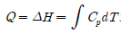
로 나타낼 수 있는 것은?- 등온변화
- 등적변화
- 등압변화
- 단열변화
(정답률: 74%)
8. 고열원 400[℃], 저열원 40[℃]에서 카르노(Carnot)사이클을 행하는 열기관의 열효율은 약 몇 [%] 인가?
- 40.5
- 53.5
- 59.5
- 62.5
(정답률: 59%)
9. 가스설비 배관의 진동설계 및 시공시의 주의사항으로 틀린 것은?
- 관내 유체가 공진현상을 일으키지 않도록 설계한다.
- 배관의 고유진동수와 배관 내 유체의 맥동수가 일치하도록 한다.
- 관내 유체의 압력변동을 가능한 한 적게 한다.
- 배관 고유진동수와 관내 유체의 진동수와의 비는 약 0.7 이하, 1.3 이상이 되도록 한다.
(정답률: 87%)
10. 내용적 40[L]의 용기에 20[℃]에서 게이지압력으로 139기압까지 충전된 수소가 공기 중에서 연소했다고 하면 약 몇 [kg]의 물이 생성되겠는가? (단, 이상기체로 간주하고, 표준상태에서 연소하는 것으로 한다.)
- 2.1
- 4.2
- 13
- 23
(정답률: 62%)
11. 흡수식 냉동기에서 암모니아 냉매의 흡수제는 무엇인가?
- 파라핀유
- 물
- 취화리듐
- 사염화에탄
(정답률: 91%)
12. 고압가스 안전관리법령에서 정한 고압가스의 범위에 대한 설명으로 옳은 것은?
- 상용의 온도에서 게이지압력이 0[MPa]이 되는 압축가스
- 섭씨 35[℃]의 온도에서 게이지압력이 0[Pa]을 초과하는 아세틸렌가스
- 상용의 온도에서 게이징압력이 0.2[MPa] 이상이 되는 액화가스
- 섭씨 15[℃]의 온도에서 게이지압력이 0.2[MPa]을 초과하는 액화가스 중 액화시안화수소
(정답률: 83%)
13. 액화석유가스 공급자의 의무사항이 아닌 것은?
- 6개월에 1회 이상 가스사용시설의 안전관리에 관한 계도물 작성, 배포
- 수요자의 가스사용시설에 대하여 6개월에 1회 이상 안전점검을 실시
- 수요자에게 위해예방에 필요한 사항을 계도
- 가스보일러가 설치된 후 매 1년에 1회 이상 보일러 성능 확인
(정답률: 92%)
14. 다음 중 액화석유가스 용기충전시설의 저장탱크에 폭발방지장치를 의무적으로 설치하여야 하는 경우는? (단, 저장탱크는 저온저장탱크가 아니며, 물분무 장치 설치기준을 충족하지 못하는 것으로 가정한다.)
- 상업지역에 저장능력 15톤 저장탱크를 지상에 설치하는 경우
- 녹색지역에 저장능력 20톤 저장탱크를 지상에 설치하는 경우
- 주거지역에 저장능력 5톤 저장탱크를 지상에 설치하는 경우
- 녹색지역에 저장능력 30톤 저장탱크를 지상에 설치하는 경우
(정답률: 90%)
15. 대기압(0[℃], 101.3[kPa])에서 비점(끓는점)이 높은 것에서 낮은 순으로 옳게 나열된 것은?
- CH4, C3H8, C4H10, Cl2
- C4H10, Cl2, C3H8, CH4
- Cl2, C4H10, C3H8, CH4
- C3H8, Cl2, CH4, C4H10
(정답률: 78%)
16. 줄(Joule)의 법칙에 의한 이상기체의 내부에너지는?
- 압력과 온도에만 의존한다.
- 체적과 온도에만 의존한다.
- 압력과 체적에만 의존한다.
- 온도에만 의존한다.
(정답률: 86%)
17. 코크스의 반응성은 가스화율에 영향을 미친다. 다음 중 반응성이 가장 낮은 것은? (단, 900[℃], 40[s], CO2로부터 CO 생성 [%] 이다.)
- 목탄
- 주물용 코크스
- 제련용 코크스
- 가스 코크스
(정답률: 74%)
18. 다음의 반응에서 A와 B의 농도를 모두 2배로 해주면 반응속도는 이론적으로 몇 배가 되겠는가?
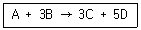
- 4
- 8
- 16
- 32
(정답률: 71%)
19. 사업자 등은 그의 시설이나 제품과 관련하여 가스 사고가 발생한 때에는 한국가스안전공사에 통보하여야 한다. 사고의 통보 시에 통보내용에 포함되어야 하는 사항으로 규정하고 있지 않은 사항은?
- 피해현황(인명과 재산)
- 시설현황
- 사고내용
- 사고원인
(정답률: 90%)
20. 압력용기의 적용범위에 해당하기 위해 설계압력 [MPa]과 내용적[m3]을 곱한 값이 얼마를 초과하여야 하는가?
- 0.004
- 0.04
- 0.002
- 0.02
(정답률: 57%)
2과목: 임의 구분
21. 독성가스와 제독제가 옳지 않게 짝지어진 것은?
- 시안화수소 - 가성소다 수용액
- 아황산가스 - 가성소다 수용액
- 암모니아 - 염산 및 질산 수용액
- 염소 - 가성소다 및 탄산소다 수용액
(정답률: 86%)
22. 기체상수(universal gas constant) R의 단위는?
- kgfㆍm/kgㆍK
- kcal/kgㆍ℃
- kcal/cm2ㆍ℃
- kgㆍK/cm2
(정답률: 88%)
23. 긴급이송설비에 부속된 처리설비는 이송되는 설비 안의 내용물을 다음 중 한 가지 방법으로 처리할 수 있어야 한다. 이에 대한 설명으로 틀린 것은?
- 독성가스는 제독 조치 후 안전하게 폐기시킨다.
- 벤트스택에서 안전하게 방출시킨다.
- 플레어스택에서 안전하게 연소시킨다.
- 액화가스는 용기로 이송한 후 소분시킨다.
(정답률: 89%)
24. 고온의 물체로부터 방사되는 에너지 중의 특정한 파장의 방사에너지, 즉 휘도를 표준온도의 고온물체와 비교하여 온도를 측정하는 온도계는?
- 열전대 온도계
- 제겔콘 온도계
- 색온도계
- 광고온계
(정답률: 90%)
25. 스크류 압축기에 대한 설명으로 틀린 것은?
- 효율이 아주 높고, 용량조정이 쉽다.
- 흡입, 압축, 토출의 3행정을 갖는다.
- 무급유식 또는 급유식 방식의 용적형이다.
- 기체에는 맥동이 적고 연속적으로 압축한다.
(정답률: 87%)
26. 가스보일러 설치기준에 따라 반밀폐식 가스보일러의 공동배기방식에 대한 기준 중 틀린 것은?
- 공동배기구의 정상부에서 최상층 보일러의 역풍방지장치 개구부 하단까지의 거리가 5[m]일 경우 공동배기구에 연결시킬 수 있다.
- 공동배기구 유효단면적 계산식 (A=Q×0.6×K×F+P)에서 P는 배기통의 수평투영면적(mm2)을 의미한다.
- 공동배기구는 굴곡 없이 수직으로 설치하여야 한다.
- 공동배기구는 화재에 의한 피해확산 방지를 위하여 방화 댐퍼(damper)를 설치하여야 한다.
(정답률: 86%)
27. 펌프의 공동현상(Cavitation)에 대하여 설명한 것은?
- 펌프의 토출구 및 흡입구에서 압력계의 바늘이 흔들리는 동시에 유량이 감소되는 현상
- 유수 중에 그 수온의 증기압력보다 낮은 부분이 생기면 물이 증발을 일으키고 수중에 용해하고 있는 증기가 토출하여 작은 기포를 발생하는 현상
- 저비점 액체를 이송할 때 펌프의 입구 쪽에서 액체에 증발현상이 나타나는 현상
- 펌프에서 물을 압송하고 있을 때 정전 등으로 급히 펌프가 멈춘 경우 또는 수량조절밸브를 급히 개폐한 경우 관내의 유속이 급변하면 물에 심한 압력변화가 생기는 현상
(정답률: 88%)
28. 허가를 받지 않고 LPG 충전사업, LPG 집단공급사업, 가스용품 제조사업을 영위한 자에 대한 벌칙으로 옳은 것은?
- 1년 이하의 징역, 1000만원 이하의 벌금
- 2년 이하의 징역, 2000만원 이하의 벌금
- 1년 이하의 징역, 3000만원 이하의 벌금
- 2년 이하의 징역, 5000만원 이하의 벌금
(정답률: 91%)
29. 고압가스 탱크의 수리를 위하여 내부 가스를 배출하고, 불활성가스로 치환한 후 다시 공기로 치환하여 분석하였더니 분석결과가 보기와 같았다. 다음중 안전작업 조건에 해당하는 것은?
- 산소 30[%]
- 수소 10[%]
- 일산화탄소 200[ppm]
- 질소 80[%], 나머지 산소
(정답률: 96%)
30. 탄소강의 표준 조직에 대한 설명으로 옳은 것은?
- 탄소강의 주조직을 레데뷰라이트라 한다.
- 아공석강은 α페라이트와 펄라이트의 혼합조직이다.
- C 0.8~2.0[%]를 공석강이라 한다.
- 공석강은 100[%] 시멘타이트 조직이다.
(정답률: 85%)
31. 고정식 압축도시가스 자동차 충전시설의 설비와 관련한 안전거리 기준에 대한 설명 중 틀린 것은?
- 저장설비, 압축가스설비 및 충전설비는 그 외면으로부터 사업소경계까지 원칙적으로 5[m] 이상의 안전거리를 유지한다.
- 저장설비, 충전설비는 가연성 물질의 저장소로부터 8[m] 이상의 거리를 유지한다.
- 충전설비는 「도로법」에 따른 도로경계까지 5[m] 이상의 거리를 유지한다.
- 처리설비, 압축가스설비 및 충전설비는 철도까지 30[m] 이상의 거리를 유지한다.
(정답률: 68%)
32. 독성가스 사용설비에서 가스누출에 대비하여 반드시 설치하여야 하는 장치는?
- 살수장치
- 액화방지장치
- 흡수장치
- 액회수장치
(정답률: 88%)
33. 밀폐식 보일러의 급ㆍ배기설비 중 밀폐형 자연 급ㆍ배기식 가스보일러의 설치방식이 아닌 것은?
- 단독 배기통 방식
- 챔버(chamber)식
- U 덕트(duct)식
- SE 덕트(duct)식
(정답률: 82%)
34. 액화석유가스 충전사업자의 안전관리현황 기록부의 보고기한은?
- 매월 다음달 15일
- 매분기 다음달 15일
- 매반기 다음달 15일
- 매년 다음해 1월 15일
(정답률: 83%)
35. 어떤 냉동기에서 0[℃]의 물로 얼음 2[ton]을 만드는데 50[kWh]의 일이 소요되었다면 이 냉동기의 성적계수는? (단, 물의 융해잠열은 80[kcal/kg] 이다.)
- 2.32
- 2.67
- 3.72
- 1⑤
(정답률: 56%)
36. 일산화탄소(CO)의 허용농도가 50[ppm]이라면 이것을 퍼센트[%]로 나타내면 얼마인가?
- 0.5
- 0.⑤
- 0.0⑤
- 0.00⑤
(정답률: 86%)
37. 2[kg]의 산소를 327[℃]에서 PV1.2=C에 따라 785200[J]의 일을 하였다. 변화 후의 온도는 약 몇 [℃] 인가? (단, R=260[Nㆍm/kgㆍK] 이다.)
- 20[℃]
- 25[℃]
- 30[℃]
- 35[℃]
(정답률: 56%)
38. 고압가스 특정제조시설의 사업소외의 배관에 설치된 배관장치에는 비상전력설비를 하여야 한다. 다음중 반드시 갖추어야 할 설비가 아닌 것은?
- 폭발방지장치
- 안전제어장치
- 운전상태 감시장치
- 가스누출검지 경보설비
(정답률: 80%)
39. 1[kg]의 공기가 100[℃]에서 열량 1200[kJ]을 얻어 등온팽창 시킬 때 엔트로피 변화량은 약 몇 [kJ/kgㆍK] 인가?
- 3.2
- 4.4
- 12.0
- 24.0
(정답률: 37%)
40. 용기에 의한 액화석유가스 사용시설에서 저장능력이 2톤인 경우 화기를 취급하는 장소와 유지하여야 하는 우회거리는 몇 [m] 이상 인가?
- 2
- 3
- 5
- 8
(정답률: 73%)
3과목: 임의 구분
41. 메탄가스에 대한 설명으로 옳은 것은?
- 비점은 약 -162[℃] 이다.
- 공기보다 무거워 낮은 곳에 체류한다.
- 공기 중 메탄가스가 3[%] 함유된 혼합기체에 점화하면 폭발한다.
- 저온에서 니켈촉매를 사용하여 수증기와 작용하면 일산화탄소와 수소를 생성한다.
(정답률: 67%)
42. 냉동장치의 점검ㆍ수리 등을 위하여 냉매계통을 개방하고자 할 때는 펌프다운(pump down)을 하여 계통 내의 냉매를 어디에 회수하는가?
- 수액기
- 압축기
- 증발기
- 유분리기
(정답률: 86%)
43. 가스용품을 수입하고자 하는 자는 관련 기관의 검사를 받아야 하는데 검사의 전부를 생략할 수 없는 경우는?
- 수출을 목적으로 수입하는 것
- 시험용 또는 연구개발용으로 수입하는 것
- 산업기계설비 등에 부착되어 수입하는 것
- 주한 외국기관에서 사용하기 위하여 수입하는 것으로 외국의 검사를 받지 아니한 것
(정답률: 91%)
44. 전기방식 중 효과범위가 넓고, 전압 및 전류의 조정이 쉬우나, 초기 투자비가 많은 단점이 있는 방법은?
- 외부전원법
- 전류양극법
- 선택배류법
- 강제배류법
(정답률: 92%)
45. 주철관 이음방법으로서 이음에 필요한 부품이 고무링 하나뿐이며, 온도변화에 따른 신축이 자유롭고, 이음 접합과정이 간편하여 관부설을 신속하게 할 수있는 특징을 가진 이음방법은?
- 벨로스 이음
- 소켓 이음
- 노허브 이음
- 타이톤 이음
(정답률: 84%)
46. 다음 [보기]에서 독성이 강한 순서대로 나열된 것은?
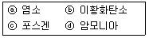
- ⓐ ＞ ⓒ ＞ ⓓ ＞ ⓑ
- ⓒ ＞ ⓐ ＞ ⓑ ＞ ⓓ
- ⓒ ＞ ⓐ ＞ ⓓ ＞ ⓑ
- ⓐ ＞ ⓒ ＞ ⓑ ＞ ⓓ
(정답률: 86%)
47. 내경이 10[cm]인 액체 수송용 파이프 속에 구경이 5[cm]인 오리피스 미터가 설치되어 있고 이 오리피스에 부착된 수은 마노미터의 눈금차가 12[cm] 이었다. 만일 5[cm] 오리피스 대신에 구경이 2.5[cm]인 오리피스 미터를 설치했다면 수은 마노미터의 눈금차는 약 몇 [cm]가 되겠는가?
- 172
- 182
- 192
- 202
(정답률: 68%)
48. 가스제조소에서 정제된 가스를 저장하여 가스의 질을 균일하게 유지하며, 제조량과 수요량을 조절하는 것은?
- 정압기
- 압송기
- 배송기
- 가스홀더
(정답률: 91%)
49. 고압가스 일반제조 시설기준 중 가연성가스 제조설비의 전기설비는 방폭성능을 가지는 구조이어야 한다. 다음 중 제외 대상이 되는 가스는?
- 에탄
- 브롬화메탄
- 에틸아민
- 수소
(정답률: 86%)
50. 다음 ( ) 안의 온도와 압력으로 맞는 것은?
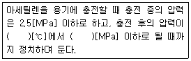
- 5, 1.0
- 15. 1.5
- 20, 1.0
- 20, 1.5
(정답률: 94%)
51. 신축이음(expansion joint)을 하는 주된 목적은?
- 진동을 적게 하기 위하여
- 관의 제거를 쉽게 하기 위하여
- 팽창과 수축에 따른 관의 정상적인 운동을 허용하기 위하여
- 펌프나 압축기의 운동에 대한 보상을 하기 위하여
(정답률: 92%)
52. 용기에 충전하는 작업을 할 때 작업자가 행하는 조작으로 직접적인 위험이 발생할 수 있는 경우는?
- 잔가스용기에 마개를 했다.
- 고압가스 충전용기에 저압가스를 충전했다.
- 충전밸브 닫는 것을 잊고 용기밸브에서 충전밸브를 분리했다.
- 충전용기에 충전할 때 저울의 눈금이 틀려 10[kg] 용기에 9.5[]kg]을 충전했다.
(정답률: 95%)
53. 불연성 고압가스(독성가스는 제외)의 제조 저장자가 정기검사를 받는 주기로서 옳은 것은?
- 1년
- 2년
- 4년
- 산업통상자원부장관이 지정하는 시기
(정답률: 78%)
54. 발열량이 20000[kcal/Nm3]이고, 비중이 1.6, 공급압력이 300[mmH2O]인 LPG로부터 발열량이 5000[kcal/Nm3], 비중 0.6, 공급압력이 150[mmH2O]인 도시가스로 변경할 경우의 LPG 노즐대비 노즐구경 변경율은 얼마인가?
- 0.54
- 1.54
- 1.86
- 2.43
(정답률: 52%)
55. 다음은 관리도의 사용 절차를 나타낸 것이다. 관리도의 사용 절차를 순서대로 나열한 것은?
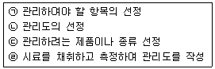
- ㉠ → ㉡ → ㉢ → ㉣
- ㉠ → ㉢ → ㉣ → ㉡
- ㉢ → ㉠ → ㉡ → ㉣
- ㉢ → ㉣ → ㉠ → ㉡
(정답률: 78%)
56. 이항분포(binomial distribution)에서 매회 A가 일어나는 확률이 일정한 값 P일 때, n회의 독립시행 중 사상 A가 x회 일어날 확률P(x)를 구하는 식은? (단, N은 로트의 크기, n은 시료의 크기, P는 로트의 모부적합품률 이다.)
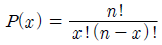
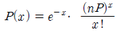
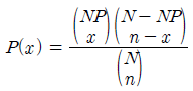
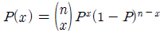
(정답률: 80%)
57. 다음 내용은 설비보전조직에 대한 설명이다. 어떤 조직의 형태에 대한 설명인가?
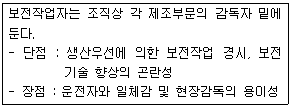
- 집중보전
- 지역보전
- 부문보전
- 절충보전
(정답률: 80%)
58. 다음 표는 어느 자동차 영업소의 월별 판매실적을 나타낸 것이다. 5개월 단순이동 평균법으로 6월의 수요를 예측하면 몇 대인가?
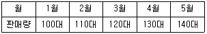
- 120대
- 130대
- 140대
- 150대
(정답률: 87%)
59. 샘플링에 관한 설명으로 틀린 것은?
- 취락 샘플링에서는 취락 간의 차는 작게, 취락 내의 차는 크게 한다.
- 제조공정의 품질특성에 주기적인 변동이 있는 경우 계통 샘플링을 적용하는 것이 좋다.
- 시간적 또는 공간적으로 일정 간격을 두고 샘플링 하는 방법을 계통 샘플링이라고 한다.
- 모집단을 몇 개의 층으로 나누어 각 층마다 랜덤하게 시료를 추출하는 것을 층별 샘플링이라고 한다.
(정답률: 62%)
60. 표준시간 설정 시 미리 정해진 표를 활용하여 작업자의 동작에 대해 시간을 산정하는 시간연구법에 해당되는 것은?
- PTS법
- 스톱워치법
- 위크샘플링법
- 실적자료법
(정답률: 83%)